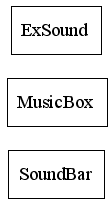

Package com.idescn.sound
Class Summary
ExSound
extend Sound, add some useful method.
MusicBox
COMPONENT [MusicBox].
playing sound by mousic note.
SoundBar
extend Sound,
add tow method of fade in and fade out voluem
Class Inheritance Diagram

Overview
Package
Class
Index